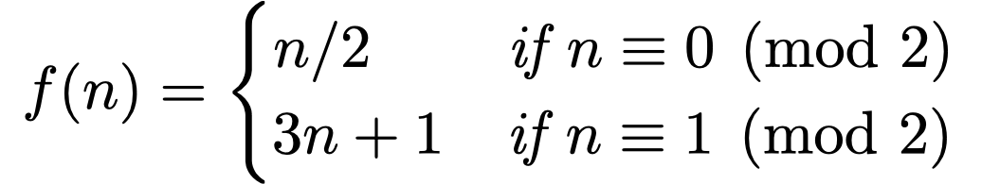

This project involves exploring properties of the Collatz sequence – a simple progression of
integers that turns out to be remarkably difficult to predict.
Think of a (Natural) number. If that number is even, halve it; if it is odd, multiply it by three and
add one. Now apply the same rule to the value you have just calculated. Repeat until your number reaches 1.
Or if you prefer it expressed more formally:

For example:
- Starting with 4: 4 → 2 → 1
- Starting with 5: 5 → 16 → 8 → 4 → 2 → 1
- Starting with 12: 12 → 6 → 3 → 10 → 5 → 16 → 8 → 4 → 2 → 1
- Starting with 13: 13 → 40 → 20 → 10 → 5 → 16 → 8 → 4 → 2 → 1
- Starting with 17: 17 → 52 → 26 → 13 → 40 → 20 → 10 → 5 → 16 → 8 → 4 → 2 → 1
The Collatz conjecture states that any positive whole number will eventually end up at 1 when
following this sequence of operations. Your task is to prove this is the case for all positive integers (and
if you do you win a prize).
As this turns out to be one of the hardest unsolved problems in mathematics, let's set ourselves a simpler
task. Can you visualize the various Collatz sequences of numbers or their properties with Processing?
The first million Collatz sequences.
Project Ideas
There are lots of possible approaches you could take for your project; here are some suggestions to inspire
you, but perhaps you have your own ideas:
- Write a method in Processing that takes a single integer parameter and applies the Collatz rules to it
repeatedly until it gets to 1. Remember the modulo operator in Processing is a
% symbol, which can be used to
determine if a number is odd or even. You may also find IntList useful for storing
a list of integers of variable length.
- Try plotting the sequence of numbers generated for any given start number. What sort of patterns do you
get? Do some starting numbers produce more interesting patterns than others?
- Some sequences are longer than others. Try plotting the starting number against the length of the
sequence it produces (e.g. 4 generates a sequence of 3 numbers; 5 a sequence of 6 numbers; 12 a sequence
of 10 numbers etc.). Any interesting patterns?
- For any given starting number, what is the largest number in the sequence it generates (e.g. starting
with 4, the highest number is 4; for 5 the highest number is 16; for 12 the highest number is 16; for 17
the highest number is 40)? Try plotting the start number against the highest number. Or the length of
the sequence against the highest number in the sequence. Any interesting patterns?
- Collatz sequences are sometimes called 'hailstone numbers' because they go up and down before eventually
falling to 1, just like the formation of hailstones in a cloud
[video]. Could you animate a circle moving up and down based on a Collatz
sequence, gradually getting larger as it does so? Could you animate hundreds of these 'hailstones'
together?
- Collatz sequences can be expressed as a tree of connected numbers. For example considering just
the odd numbers in the examples above, 5 is connected to 1 (5 → 16 → 8 → 4 → 2 → 1) and 13 is connected
to 5 (13 → 40 → 20 → 10 → 5) and 17 is connected to 13 (17 → 52 → 26 → 13). Can you visualize these
connected numbers in processing, using lines to connect numbers? Are there creative ways to show Collatz
trees? [video]
- Could you extend the idea of the Collatz sequence to complex numbers?
Can you visualize the results? Perhaps as a fractal?
- Can you use Collatz sequences to generate more creative representations? For example could you use the
numbers to control the colour of some feature, or generate sound or some kind of animation?
Jo Wood, 2021